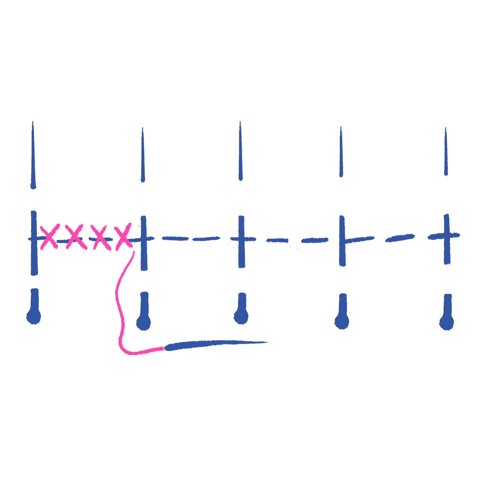

TIME NEEDED
15 - 30 mins.
DIFFICULTY
MATERIALS
Button

BUTTONS - REATTACH BUTTON
Fixing a button or adding a button for decoration is an easy skill to learn and pretty useful! You can use an extra button that came with your garment, sometimes found on the tag of your garment. You can also use another random button for fun! Whatever you like!

INSTRUCTIONS
1. Position button, sometimes there are marks indicating where it was
2. Thread the needle and tie a knot at the end. The length of your thread should be 1.5 times the size of your wrist.
3. Start from the inside of the garment hiding the knot on the inside.
4. Bring the needle through one of the buttonholes, then down through the opposite hole. Repeat this a few times between the two buttonholes making sure it’s tight and secure.
5. If the button is meant to sit above the fabric (like on a coat), you might want to create a shank. To do this, after sewing the button on securely, but before finishing off the thread, place a toothpick or a matchstick horizontally on top of the button. Wrap the thread around the toothpick a few times, then sew through the fabric underneath to secure the shank. Remove the toothpick and finish off the thread.
6. Once the button is securely attached, finish off the thread by making a few small stitches underneath the button. Tie a knot close to the fabric and trim any excess thread.
7. Make sure the button is secure by gently tugging on it.
8. You can use a bit of fabric glue / super glue / clear nail polish on the knot to ensure the button does not fall off again.